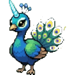

 Psychic
Psychic Light
LightTap a stage to read its story.
Pavkit struts on two turquoise legs, its round teal-and-blue body capped with a single slender crystal horn on its head. A compact fan of iridescent tail feathers already sport luminous eye-spots that glitter in the crystal mines' refracted light. It tilts its head whenever a gem shard catches a sunbeam, transfixed for minutes at a time. The mine's guardian elders say a Pavkit once led explorers out of a tunnel collapse simply by following its glowing horn, which pulses faintly when it senses hidden crystal veins.
Field note: A Pavkit's horn glows three times brighter just before a new crystal vein is about to crack open.
Crystal Mines. Pavkit and its family are found in the Crystal Mines. See everyone who lives there.
Share a Bond Food that matches its types to become friends. Pavkit loves:
A Bond Food is not a trick. It joins your spirit with the Kimuro's spirit, and only when it chooses you.
Print the Kimuro adventure packs: mazes, cards, a board game and Bond Mark medals.
See the printable packs